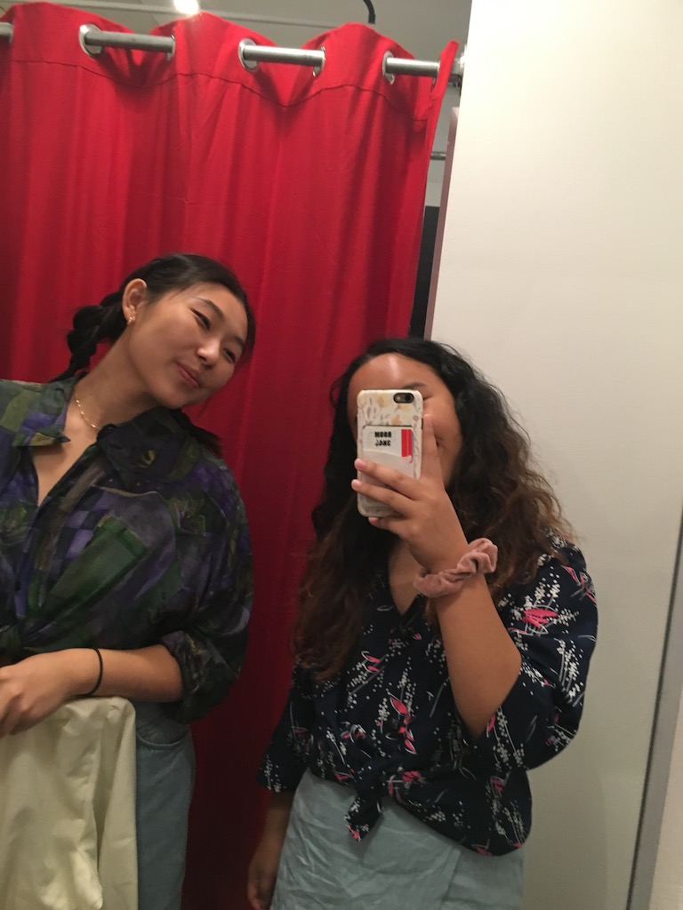
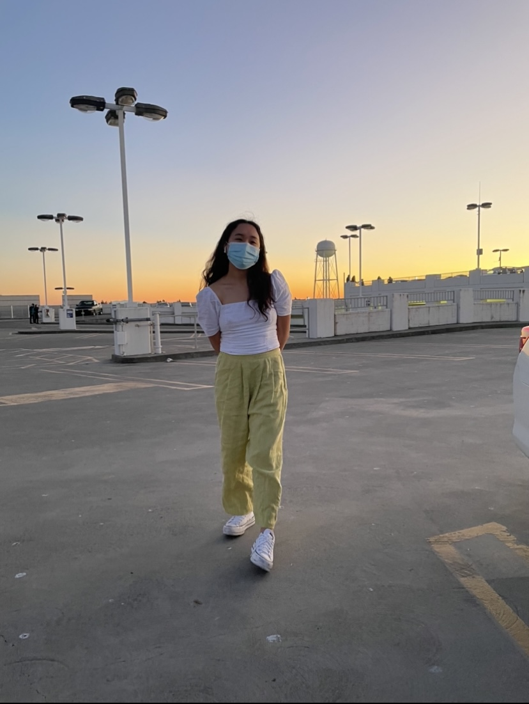

Navy Silk Blouse
July 2019 | Brick Lane - London, UK
This was one of the first things I ever thrifted. I was introduced to thrifting by a friend who is really into sustainable fashion and thrifting while studying abroad. This really caught my eye because of the fun pattern! When I wear this, I'm reminded of my study abroad adventures.
Green Linen Pants
January 2020 | Ecothrift - Sacramento, CA
For 2020, one of my resolutions was to change my style. One of the reasons I got into thrifting in the first place was to do so in an affordable and sustainable way. I found these pants for $5 and I like to wear them when I want more color in my outfit!
Pink Silk Skirt
September 2020 | Crossroads - San Francisco, CA
After a failed first date (lol), I went thrifting to cheer myself up. I found this skirt walking into a random thriftstore in Haight Ashbury; maybe sometimes retail therapy is the answer ;-)
Pink Chiffon Blouse

December 2020 | Flamingo Vintage Pound - New York City, NY
This Dior blouse is one of my more valuable finds. I found this in a vintage shop in New York City. With its shoulder pads and flowy fabric, I'd guess that this is from the 80s! I like to wear this when I want to look more professional.